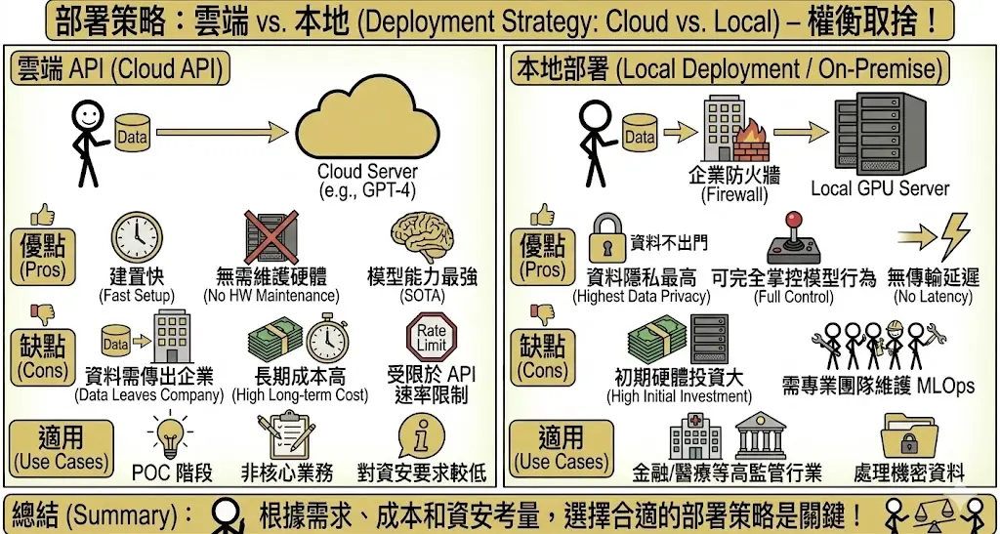
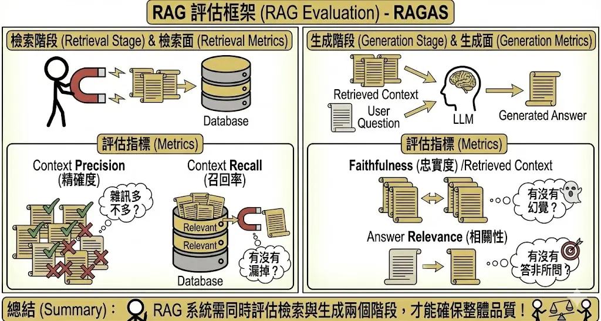
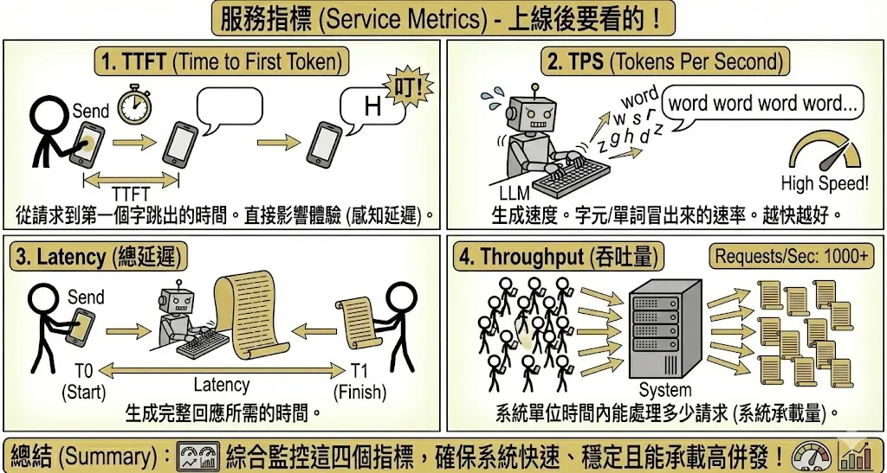
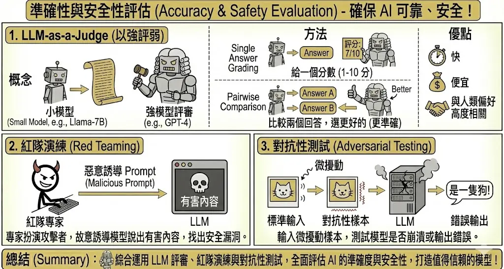

生成式 AI 專案管理與評估 (Project Planning & Eval)
考點摘要：涵蓋從 POC 到上線的完整流程，以及如何量化評估生成模型的好壞。
導入流程與策略
1. 階段規劃
導入 GenAI 專案通常遵循以下步驟：
- 目標設定 (Goal Setting)：明確定義要解決什麼問題（如：減少客服 30% 工作量）。設定 KPI。
- 資料準備 (Data Preparation)：清洗企業內部資料，去個資，轉換格式。這是最耗時但也最重要的步驟。
- 技術選型 (Model Selection)：決定用雲端 API (GPT-4) 還是自建模型 (Llama 3)？決定用 RAG 還是 Fine-tuning？
- POC (概念驗證)：快速做出原型，驗證可行性。
- 部署與監控 (Deployment & Monitoring)：上線後持續監控幻覺率與使用者滿意度。
2. 部署策略：雲端 vs. 本地
- 雲端 API (Cloud API)：
- 優點：建置快、無需維護硬體、模型能力最強 (SOTA)。
- 缺點：資料需傳出企業、長期成本高（按 Token 計費）、受限於 API 速率限制 (Rate Limit)。
- 適用：POC 階段、非核心業務、對資安要求較低的場景。
- 本地部署 (Local Deployment / On-Premise)：
- 優點：資料隱私最高（資料不出門）、可完全掌控模型行為、無傳輸延遲。
- 缺點：初期硬體投資大 (GPU Server)、需專業團隊維護 MLOps。
- 適用：金融/醫療等高監管行業、處理機密資料。

3. 硬體資源優化
- GPU 利用率低：常見原因包括 Batch Size 設太小（GPU 沒吃飽）或 I/O 瓶頸（硬碟讀取太慢，GPU 在等資料）。
- 模型量化 (Quantization)：
- 原理：降低數值精度以減少記憶體佔用與加速運算。
- FP16 (半精度)：標準訓練精度。
- INT8 / INT4 (整數)：推論常用。雖然精度降低，但對模型表現影響微乎其微 (Lossless-like)，卻能大幅降低硬體需求。
- 估算：跑一個 7B 的模型 (FP16) 大約需要 14GB VRAM。若使用 INT4 量化，則只需約 5-6GB，讓消費級顯卡也能跑大模型。
- Flash Attention：一種加速 Attention 計算的演算法，能顯著降低記憶體存取次數，提升長文本處理速度。
投資效益評估 (ROI Analysis)
企業導入生成式 AI 是一項重大投資，必須進行嚴謹的財務評估。
1. 成本結構 (Cost Structure)
- 技術開發成本：模型訓練/微調費用、軟體授權 (API Token)、雲端服務訂閱。
- 基礎設施成本：GPU 伺服器購置、資料儲存與傳輸費用、維運電力與冷卻。
- 人力成本：AI 工程師薪資、外部顧問費用、員工培訓成本。
- 隱性成本：資料清洗與標註的時間成本、系統整合的複雜度風險。
2. 效益分析 (Benefit Analysis)
- 直接效益：
- 營收增長：透過個人化行銷提升轉換率、開發新產品線。
- 成本節約：自動化客服減少人力需求、加速程式開發降低外包費用。
- 間接效益：
- 效率提升：縮短文件處理時間、加速決策流程。
- 創新驅動：激發員工創意，探索新的商業模式。
3. 財務指標 (Financial Metrics)
- 投資回報率 (ROI)：(總效益 - 總成本) / 總成本。最直觀的指標。
- 淨現值 (NPV)：將未來的現金流折現回當前價值，評估專案的長期價值。
- 內部報酬率 (IRR)：評估專案的資金效率，通常需高於企業的資金成本率 (WACC)。
- 回收期 (Payback Period)：計算需要多久才能回本。
組織與人才策略 (Organization & Talent)
技術只是工具，人才是成功的關鍵。
1. 人才培育 (Talent Development)
- 內部培訓：針對不同職能設計課程。
- 技術人員：學習 LLM 微調、Prompt Engineering、RAG 架構。
- 業務人員：學習如何使用 AI 工具優化工作流程。
- 實務操作：舉辦黑客松 (Hackathon) 或工作坊，鼓勵員工動手實作。
2. 組織文化 (Organizational Culture)
- 跨部門協作：AI 專案通常涉及 IT、業務、法務等多個部門，需打破穀倉效應 (Silo)。
- 容錯文化：AI 專案具有不確定性 (如幻覺)，應鼓勵「快速試錯 (Fail Fast)」，從失敗中學習。
- 人機協作：強調 AI 是「副駕駛 (Copilot)」，目標是增強人類能力而非取代人類。
效能評估指標
評估生成式 AI 比評估傳統 AI 難，因為「好文筆」很難量化。
1. 基準測試 (Benchmarks)
學術界常用的標準考卷：
- MMLU (Massive Multitask Language Understanding)：包含數學、歷史、法律、醫學等 57 個學科，測試模型的廣度知識與推理能力。
- GSM8K：小學數學應用題。測試模型的多步驟推理能力。
- HumanEval / MBPP：測試寫程式的能力。
- TTQA (Taiwan Truthful QA)：針對台灣本土文化與知識的測試集（避免模型只懂美國文化）。
2. RAG 評估框架 (RAG Evaluation)
RAG 系統涉及「檢索」與「生成」兩個階段，必須分別評估。業界常用 RAGAS 框架。

- 檢索面 (Retrieval Metrics)：
- Context Precision (精確度)：檢索到的內容中，有多少是真的相關的？（雜訊多不多？）
- Context Recall (召回率)：所有相關的內容，有多少被檢索到了？（有沒有漏掉？）
- 生成面 (Generation Metrics)：
- Faithfulness (忠實度)：生成的回答是否完全基於檢索到的內容？（有沒有幻覺？）
- Answer Relevance (相關性)：生成的回答是否真的回答了使用者的問題？（有沒有答非所問？）
3. 服務指標 (Service Metrics)
上線後要看的指標：
- TTFT (Time to First Token)：從使用者送出請求，到看到第一個字跳出來的時間。這直接影響使用者體驗 (感知延遲)。
- TPS (Tokens Per Second)：生成速度。越快越好。
- Latency (總延遲)：生成完整回應所需的時間。
- Throughput (吞吐量)：系統單位時間內能處理多少請求。

4. 準確性與安全性評估
- LLM-as-a-Judge：
- 概念：用更強的模型 (如 GPT-4) 來擔任「評審」，幫小模型 (如 Llama-7B) 的回答打分。
- 方法：
- Single Answer Grading：給一個分數 (1-10 分)。
- Pairwise Comparison：給兩個回答 (A vs B)，問評審哪個更好。這通常比打分更準確。
- 優點：比人類評估快且便宜，且與人類偏好高度相關。
- 紅隊演練 (Red Teaming)：聘請專家扮演攻擊者，故意誘導模型說出有害內容，以找出安全漏洞。
- 對抗性測試 (Adversarial Testing)：輸入微擾動的樣本，看模型是否會崩潰或輸出錯誤。
